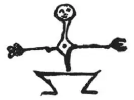
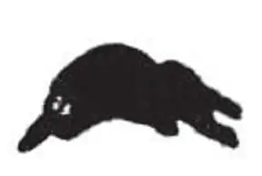
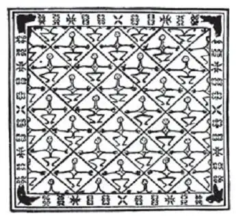

III. Modern manufacture and Design
三、现代制造业与设计
A Lecture delivered at Bradford, March, 1859.
1859 年3 月于布拉德福德大学
It is with a deep sense of necessity for your indulgence that I venture to address you to-night, or that I venture at any time to address the pupils of schools of design intended for the advancement of taste in special branches of manufacture. No person is able to give useful and definite help towards such special applications of art, unless he is entirely familiar with the conditions of labour and natures of material involved in the work; and indefinite help is little better than no help at all. Nay, the few remarks which I propose to lay before you this evening will, I fear, be rather suggestive of difficulties than helpful in conquering them: nevertheless, it may not be altogether unserviceable to define clearly for you (and this, at least, I am able to do) one or two of the more stern general obstacles which stand at present in the way of our success in design; and to warn you against exertion of effort in any vain or wasteful way, till these main obstacles are removed.
今晚我敢于站在这里向你们发表演讲，或者说，在任何时候，面对这些希望自己在制造业某些专业领域内的品位得到提高的设计学院学生，我敢于发表演讲，正是因为我深深感受到大家的宽容。除非完全熟知这项工作所涉及的种种劳动环境和原料性质，否则没有人可以对这样一种专门的艺术应用行业提供任何有益和明确的帮助；而不明确的帮助比没有帮助好不了多少。不仅如此，我担心自己今晚所说的只是提醒你们一些困难的存在而不是帮助你们如何克服它们：不过，这些话也不会完全无用，应该能使你们明确一两个比较严重和普遍的障碍（至少这是我能够做到的），正是这些障碍目前阻挡我们在设计领域取得成功；告诫你们在清除这些主要的障碍前，不要将精力浪费在任何无用的地方。
The first of these is our not understanding the scope and dignity of Decorative design. With all our talk about it, the very meaning of the words "Decorative art" remains confused and undecided. I want, if possible, to settle this question for you to-night, and to show you that the principles on which you must work are likely to be false, in proportion as they are narrow; true, only as they are founded on a perception of the connection of all branches of art with each other.
第一个障碍是，我们不理解装饰设计的范围和尊严。虽然我们经常谈论“装饰艺术”，但这一概念的确切含义却依然含混不清。我希望，如果可能的话，今晚可以为大家解决这个问题，并向你们说明那些必要的工作原则可能是错误的，其错误程度与其狭隘程度成正比；只有建立在所有艺术分支相互联系的观念之上时，这些原则才是正确的。
Observe, then, first—the only essential distinction between Decorative and other art is the being fitted for a fixed place; and in that place, related, either in subordination or command, to the effect of other pieces of art. And all the greatest art which the world has produced is thus fitted for a place, and subordinated to a purpose. There is no existing highest-order art but is decorative. The best sculpture yet produced has been the decoration of a temple front—the best painting, the decoration of a room. Raphael's best doing is merely the wall-colouring of a suite of apartments in the Vatican, and his cartoons were made for tapestries. Correggio's best doing is the decoration of two small church cupolas at Parma; Michael Angelo's of a ceiling in the Pope's private chapel; Tintoret's, of a ceiling and side wall belonging to a charitable society at Venice; while Titian and Veronese threw out their noblest thoughts, not even on the inside, but on the outside of the common brick and plaster walls of Venice.
然后，首先要注意的是——装饰艺术与其他艺术形式唯一的根本性区别是，它适用于某一个固定的地方；而在这个地方，它又与其他艺术作品的效果相关，要么从属于后者，要么支配着后者。这个世界所产生的所有最伟大的艺术形式都以此方式适用于一个地方，服从于一种目的。并不存在任何最高级的艺术，只存在装饰艺术。最好的已有雕刻作品是一座寺院前墙的装饰浮雕，最好的绘画作品，则是一间屋子的装饰画。拉斐尔最好的作品也不过是梵蒂冈一套公寓内的彩色壁画，而且这幅画的草图原本是为挂毯设计的。柯勒乔最好的作品是意大利帕尔马两座小教堂炮塔的绘画；米开朗琪罗的是罗马教皇私人小教堂的天顶画；丁托列托的是为威尼斯一个慈善团体绘制的天顶画和侧墙壁画；提香和韦罗内塞甚至没有将他们的高贵想法用在室内，而是表现在威尼斯室外一面面普通水泥砖墙上。
Get rid, then, at once of any idea of Decorative art being a degraded or a separate kind of art. Its nature or essence is simply its being fitted for a definite place; and, in that place, forming part of a great and harmonious whole, in companionship with other art; and so far from this being a degradation to it—so far from Decorative art being inferior to other art because it is fixed to a spot—on the whole it may be considered as rather a piece of degradation that it should be portable. Portable art—independent of all place—is for the most part ignoble art. Your little Dutch landscape, which you put over your sideboard to-day, and between the windows to-morrow, is a far more contemptible piece of work than the extents of field and forest with which Benozzo
1 has made green and beautiful the once melancholy arcade of the Campo Santo at Pisa; and the wild boar of silver which you use for a seal, or lock into a velvet case, is little likely to be so noble a beast as the bronze boar who foams forth the fountain from under his tusks in the market-place of Florence. It is, indeed, possible that the portable picture or image may be first-rate of its kind, but it is not first-rate because it is portable; nor are Titian's frescoes less than first-rate because they are fixed; nay, very frequently the highest compliment you can pay to a cabinet picture is to say—"It is as grand as a fresco."
那么，请马上丢掉那些认为装饰艺术是一种堕落或单独的艺术形式的想法。从性质或者本质上来说，它不过是将艺术运用于一个特定的地方；而且，在这个地方，它与其他艺术形式相伴，形成一个伟大、和谐的整体的一部分；被固定在一个地方的特点，不仅不会降低它的艺术性——即装饰艺术不仅不会因此比其他艺术形式低等，相反，总体而言，可以移动的艺术品——独立于所有地方——在很大程度上是卑微的艺术品。一小幅荷兰风景画，你们今天挂在餐柜上方，明天挂在窗户中间；它远远比不上贝诺佐的大面积绿色田野森林画，后者使原本忧伤的意大利比萨圣墓园的拱形走道变得充满生机和美丽；与佛罗伦萨市场上长着獠牙、口吐喷泉水的青铜野猪像相比，用来做图章或锁进天鹅绒箱子的银质野猪模型不太可能更高贵。的确，可以移动的画或塑像可能是此类艺术品中的一流作品，但它不是一流的作品，因为它可以移动；提香的壁画也并没有因为不能移动而成为二流作品；不仅如此，往往你们对一幅小巧的画的最高赞赏是说——“它像壁画一样宏伟壮丽”。
Keeping, then, this fact fixed in our minds,—that all art may be decorative, and that the greatest art yet produced has been decorative,—we may proceed to distinguish the orders and dignities of Decorative art, thus:—
因此，我们头脑中要牢牢记住这个事实——所有的艺术都可能是装饰性的，已创作出的最伟大的艺术就是装饰性的——我们可以进一步区分装饰艺术的规则和尊贵品质，结果如下：
I. The first order of it is that which is meant for places where it cannot be disturbed or injured, and where it can be perfectly seen; and then the main parts of it should be, and have always been made, by the great masters, as perfect, and as full of nature as possible.
一、第一个规则是：装饰艺术所处的地方一方面应该使其免受干扰和破坏，另一方面又要使其得到完美展示；然后，装饰品的主要部分应该并且总是由杰出的大师完成，尽可能地完美和自然。
You will every day hear it absurdly said that room decoration should be by flat patterns—by dead colours—by conventional monotonies, and I know not what. Now, just be assured of this—nobody ever yet used conventional art to decorate with, when he could do anything better, and knew that what he did would be safe. Nay, a great painter will always give you the natural art, safe or not. Correggio gets a commission to paint a room on the ground floor of a palace at Parma: any of our people—bred on our fine modern principles—would have covered it with a diaper, or with stripes or flourishes, or mosaic patterns. Not so Correggio:—he paints a thick trellis of vine-leaves, with oval openings, and lovely children leaping through them into the room; and lovely children, depend upon it, are rather more desirable decorations than diaper, if you can do them—but they are not quite so easily done. In like manner Tintoret has to paint the whole end of the Council Hall at Venice. An orthodox decorator would have set himself to make the wall look like a wall—Tintoret thinks it would be rather better, if he can manage it, to make it look a little like Paradise;—stretches his canvas right over the wall, and his clouds right over his canvas; brings the light through his clouds—all blue and clear—zodiac beyond zodiac; rolls away the vaporous flood from under the feet of saints, leaving them at last in infinitudes of light—unorthodox in the last degree, but, on the whole, pleasant.
你们每天都会听到一些荒谬的观点，说房间应该用平面图案装饰——死板的色彩——传统的单调。我不知道这些。现在，你们要相信——如果可以有更好的、并且知道是安全的选择，没有人会用传统艺术作装饰。不仅如此，一位杰出的画家永远会向你们呈现自然的艺术，无论它是否安全。柯勒乔受托为意大利帕尔马一座宫殿一层的一间房子绘制壁画：我们中任何一个人——一直受细致的现代原则熏陶的人——都会用菱形花格，或者条纹，或者花饰，或者镶嵌图案来覆盖墙面。柯勒乔并没有这样做：他画的是，茂盛的葡萄藤架上有一些椭圆形的开口，几个可爱的孩子正从这里跳跃着进到房子里；毫无疑问，如果你能做到，用这些可爱的孩子的图案作装饰，远比菱形花格更招人喜欢——但这并不是一件简单的事。同样地，丁托列托必须为威尼斯一个议会大厅的整个尽头部分绘制壁画。正统的装饰工会努力使这面墙看起来像一面墙——丁托列托则认为，如果自己可以驾驭的话，使这面墙看起来有点像天堂会更好些——他用画布覆盖了整面墙，又在画布上布满云彩；然后让光芒穿透云层——一切都是碧蓝的、清澈的——一圈又一圈；直至消散在圣徒们脚下翻滚的洪水中，最终使他们置身于无限的光芒里——这是最大限度的反传统，但总体来说，令人欣赏。
And so in all other cases whatever, the greatest decorative art is wholly unconventional—downright, pure, good painting and sculpture, but always fitted for its place; and subordinated to the purpose it has to serve in that place.
其他所有的例子也是如此，最伟大的装饰艺术完全是非传统的——是坦率、纯洁、优秀的画作和雕塑品，但永远适合它所处的地方，而且服务于它在该处必须服务的目的。
II. But if art is to be placed where it is liable to injury—to wear and tear; or to alteration of its form; as, for instance, on domestic utensils, and armour, and weapons, and dress; in which either the ornament will be worn out by the usage of the thing, or will be cast into altered shape by the play of its folds; then it is wrong to put beautiful and perfect art to such uses, and you want forms of inferior art, such as will be by their simplicity less liable to injury; or, by reason of their complexity and continuousness, may show to advantage, however distorted by the folds they are cast into.
二、但如果艺术品所处的地方使其很容易受到伤害，遭受损毁；或者容易变形，例如，放在家用器具、盔甲、武器和衣服上，这种情况下，装饰品或者随着物品的使用而磨损，或者因为褶皱的效果而改变形状。所以，将美丽而完美的艺术用到这些地方是错误的，你们需要的是低等些的艺术形式，例如那些简单而不易损伤的；或者那些本身复杂耐用，无论怎么被褶皱扭曲，也能显示出优点的。
And thus arise the various forms of inferior decorative art, respecting which the general law is, that the lower the place and office of the thing, the less of natural or perfect form you should have in it; a zigzag or a chequer is thus a better, because a more consistent ornament for a cup or platter than a landscape or portrait is: hence the general definition of the true forms of conventional ornament is, that they consist in the bestowal of as much beauty on the object as shall be consistent with its Material, its Place, and its Office.
因此就出现了低等装饰艺术的不同形式，其普遍法则是，物品本身的地位和职能越低，你赋予它的自然或完美的形式就应该越少；对于茶杯和大浅盘而言，锯齿形或方格形图案要比风景画或肖像画更容易保持，所以也更好；因此，对传统装饰图案真正形式的一般定义是：在赋予物品美丽的同时，同样也应与物品本身的材料、位置和职能相一致。
Let us consider these three modes of consistency a little.
我们来稍微考虑考虑一致性的下面三种模式。
(A.) Conventionalism by cause of inefficiency of material.
1 由于材料的无效而导致的传统表现方法
If, for instance, we are required to represent a human figure with stone only, we cannot represent its colour; we reduce its colour to whiteness. That is not elevating the human body, but degrading it; only it would be a much greater degradation to give its colour falsely. Diminish beauty as much as you will, but do not misrepresent it. So again, when we are sculpturing a face, we can't carve its eyelashes. The face is none the better for wanting its eyelashes—it is injured by the want; but would be much more injured by a clumsy representation of them.
例如，如果要求我们只能用石头来表现人体的形态，我们就表现不出人体的颜色，只能将其简化成白色。这样做没有提升人体的艺术感，而是降低了它；只不过，要是涂上了错误的颜色，就会更糟糕。因此，宁可尽量简化艺术美感，也不要错误地表现。同样，雕刻面部的时候，我们不能雕刻眼睫毛。缺少了眼睫毛，面部并没有变得更美——这种缺失损害了美感；但如果笨拙地表现出了眼睫毛，损害会更大。
Neither can we carve the hair. We must be content with the conventionalism of vile solid knots and lumps of marble, instead of the golden cloud that encompasses the fair human face with its waving mystery. The lumps of marble are not an elevated representation of hair—they are a degraded one; yet better than any attempt to imitate hair with the incapable material.
我们也不能雕刻头发。粗糙坚硬的大理石，只能通过石块上的结结块块来表现头发的样子，我们必须满足于这种传统主义，而不能用神秘的波浪形金黄色云烟来围绕白皙美丽的人脸。大理石块不能提升对头发的表现力，而是降低了表现力；但这样做要好于试图用无法表现的材料来模仿头发的形态。
In all cases in which such imitation is attempted, instant degradation to a still lower level is the result. For the effort to imitate shows that the workman has only a base and poor conception of the beauty of the reality—else he would know his task to be hopeless, and give it up at once; so that all endeavours to avoid conventionalism, when the material demands it, result from insensibility to truth, and are among the worst forms of vulgarity. Hence, in the greatest Greek statues, the hair is very slightly indicated—not because the sculptor disdained hair, but because he knew what it was too well to touch it insolently. I do not doubt but that the Greek painters drew hair exactly as Titian does. Modern attempts to produce finished pictures on glass result from the same base vulgarism. No man who knows what painting means, can endure a painted glass window which emulates painter's work. But he rejoices in a glowing mosaic of broken colour: for that is what the glass has the special gift and right of producing. (See Appendix II., Sir Joshua Reynolds' disappointment.)
任何情况下试图进行这样的模仿，结果都是艺术性会立即降到更低的水平，因为这种试图模仿的行为表明，这位工匠对现实中的美的理解仅仅是低级和贫乏的——否则他就会知道，自己所做的工作是毫无希望的，应该立即放弃。因此，当材料本身要求传统表现方法时，所有试图逃避传统主义的努力都是因为对事实的漠视，是最糟糕的一种粗俗表现。因此，在最伟大的希腊雕像中，头发只是略微表现了出来——并不是因为雕刻家蔑视头发，而是因为他知道头发太完美了，硬要傲慢无礼地表现它们是不对的。我毫不怀疑希腊画家绘制头发的方法和提香一样。现代人尝试在玻璃上绘制精美的画作也源于同样低级的粗俗。懂得什么是绘画的人，不会容忍在玻璃窗上仿造画家的彩绘作品。但他会很高兴看到玻璃窗上鲜明的复色镶嵌图案，因为这才是玻璃擅长表现和应该表现的。（参见附录二“雷诺兹的失望”——作者注）
(B.) Conventionalism by cause of inferiority of place.
2 因位置的不利而导致的传统表现方法。
When work is to be seen at a great distance, or in dark places, or in some other imperfect way, it constantly becomes necessary to treat it coarsely or severely, in order to make it effective. The statues on cathedral fronts, in good times of design, are variously treated according to their distances: no fine execution is put into the features of the Madonna who rules the group of figures above the south transept of Rouen at 150 feet above the ground: but in base modern work, as Milan Cathedral, the sculpture is finished without any reference to distance; and the merit of every statue is supposed to consist in the visitor's being obliged to ascend three hundred steps before he can see it.
当作品需要远距离观看，或者在阴暗的地方观看，或者观赏条件有其他不足时，为了给人留下深刻的印象，粗糙、硬朗的表现方法始终是必要的。以大教堂正面的雕像群为例，在设计艺术的鼎盛时期，根据它们观看距离的不同而采用不同的表现方式：鲁昂大教堂南部十字型翼部上方，统领整组雕像群的圣母马利亚像，距离地面150 英尺，其外貌轮廓并没有采用精细的雕刻手法；而在低级的现代作品中，例如米兰大教堂，创作雕像时根本没有考虑到距离的因素；要欣赏到每座雕像的优点，参观者不得不登上300 级台阶，到这个高度才能看到。
(C.) Conventionalism by cause of inferiority of office.
3 因职能低微而导致的传统表现方法。
When one piece of ornament is to be subordinated to another (as the moulding is to the sculpture it encloses, or the fringe of a drapery to the statue it veils), this inferior ornament needs to be degraded in order to mark its lower office; and this is best done by refusing, more or less, the introduction of natural form. The less of nature it contains, the more degraded is the ornament, and the fitter for a humble place; but, however far a great workman may go in refusing the higher organisms of nature, he always takes care to retain the magnificence of natural lines; that is to say, of the infinite curves, such as I have analyzed in the fourth volume of "Modern Painters." His copyists, fancying that they can follow him without nature, miss precisely the essence of all the work; so that even the simplest piece of Greek conventional ornament loses the whole of its value in any modern imitation of it, the finer curves being always missed. Perhaps one of the dullest and least justifiable mistakes which have yet been made about my writing, is the supposition that I have attacked or despised Greek work. I have attacked Palladian work, and modern imitation of Greek work. Of Greek work itself I have never spoken but with a reverence quite infinite: I name Phidias always in exactly the same tone with which I speak of Michael Angelo, Titian, and Dante. My first statement of this faith, now thirteen years ago, was surely clear enough. "We shall see by this light three colossal images standing up side by side, looming in their great rest of spirituality above the whole world horizon. Phidias, Michael Angelo, and Dante, —from these we may go down step by step among the mighty men of every age, securely and certainly observant of diminished lustre in every appearance of restlessness and effort, until the last trace of inspiration vanishes in the tottering affectation or tortured insanities of modern times." ("Modern Painters," vol. ii., p. 221.) This was surely plain speaking enough, and from that day to this my effort has been not less continually to make the heart of Greek work known than the heart of Gothic: namely, the nobleness of conception of form derived from perpetual study of the figure; and my complaint of the modern architect has been not that he followed the Greeks, but that he denied the first laws of life in theirs as in all other art.
当一件装饰物从属于另一件时（就像线脚从属于它所围绕的雕刻品，或者帷帐的穗子从属于它所遮盖的雕像），为了标识它较低的职能，匠人需要降低次级装饰物的艺术等级；而最好的方法就是，或多或少地拒绝使用自然的形式。装饰物所包含的自然成分越少，它的艺术等级就越低，就越适合处于卑微的位置；但是，对于一位伟大的艺术家而言，无论他在多大程度上拒绝表现自然的高级有机体，他也总是注意保持自然线条的壮丽；也就是我在《现代画家》第4 卷中所分析的，表现无限的曲线。那些模仿者们，以为可以抛开自然来追随伟大的艺术家，而他们丢掉的恰恰是所有艺术作品的本质。因此，即使是最简单的一件希腊传统装饰物，它的现代仿制品也失去了原作的全部艺术价值，仿制品的曲线永远不如原作精美。或许在对我的著作的各种误解中，最无聊、最不合理的错误观点之一就是假定我曾抨击或鄙视希腊作品。我曾经抨击过帕拉第奥式的作品，也批评过希腊作品的现代仿制品。但谈论希腊作品本身时，我从来都是怀着无限的敬意。每当提到菲迪亚斯的名字时，我的语气就和提到米开朗琪罗、提香和但丁时完全一样。13 年前，我第一次表明这种信念时，就说得足够清楚明确：“借着这道光，我们可以看见并肩而立的三个巨人像，他们伟大的精神从容地隐现在整个世界的地平线上。他们是菲迪亚斯、米开朗琪罗和但丁——以他们为起点，我们可以一步步向下找寻每个时代伟大艺术家的身影，并会安然和确切地发现每一次不安分和试图突破都会削减艺术的光彩，直至最后一丝灵感消失在现代摇摇欲坠的矫揉造作或扭曲的病态精神之中”（见《现代画家》第2 卷，第 221 页）。这当然是再直白不过的表白，从那天起直到现在，我一直致力于宣扬希腊艺术的本质，丝毫不亚于我为宣扬哥特艺术的本质所作出的努力，即形式观念的可贵之处来源于对事物形态的不断研究；而且，我之所以抱怨现代建筑师，并不是因为他对希腊艺术的追随，而是因为他否认了生命力是其本身的艺术作品和其他一切艺术作品的首要法则。
The fact is, that all good subordinate forms of ornamentation ever yet existent in the world have been invented, and others as beautiful can only be invented, by men primarily exercised in drawing or carving the human figure. I will not repeat here what I have already twice insisted upon, to the students of London and of Manchester, respecting the degradation of temper and intellect which follows the pursuit of art without reference to natural form, as among the Asiatics: here, I will only trespass on your patience so far as to mark the inseparable connection between figure-drawing and good ornamental work, in the great European schools, and all that are connected with them.
事实上，迄今为止，这个世界上出现的所有优秀的附属形式装饰物，以及其他那些同样美丽的装饰物，都是而且只能是由主要从事人像绘画和雕刻的艺术家创造出来的。在这里我不再重复我已经强调过两次的话，两次分别是对伦敦和曼彻斯特的学生讲的，谈论的是关于性情和才能如何因为不顾自然形式、盲目追求艺术而退化，就像亚洲人那样。我在这里如此地不厌其烦，只是为了让你们注意到：在伟大的欧洲流派和所有与之相关的各种流派中，人像绘画和好的装饰作品之间有着密不可分的联系。
Tell me, then, first of all, what ornamental work is usually put before our students as the type of decorative perfection? Raphael's arabesques; are they not? Well, Raphael knew a little about the figure, I suppose, before he drew them. I do not say that I like those arabesques; but there are certain qualities in them which are inimitable by modern designers; and those qualities are just the fruit of the master's figure study. What is given the student as next to Raphael's work? Cinquecento ornament generally. Well, cinquecento generally, with its birds, and cherubs, and wreathed foliage, and clustered fruit, was the amusement of men who habitually and easily carved the figure, or painted it. All the truly fine specimens of it have figures or animals as main parts of the design.
那么，首先请告诉我，通常作为装饰艺术的完美典范摆放在我们学生面前的是什么样的装饰作品？拉斐尔的蔓藤花纹，不是吗？好吧，我想拉斐尔在画这些花纹之前，对它们的形态多少是了解一些的。我并不是说自己喜欢那些花纹，但它们具有的某些特性确实是现代设计者无法模仿的，那些特性就是这位大师对形态进行研究的结果。拉斐尔作品之后，还有哪些可以拿给学生们看呢？通常是16 世纪意大利艺术风格的装饰物。那么，一般来说，16 世纪意大利艺术作品的图案是各种鸟类、小天使、环绕盘旋的叶子和一串串果实，这些都是习惯了且能毫不费力地雕刻或绘制出人物形态的艺术家们的消遣之作。一切真正优秀的装饰艺术典范作品，都以人物或动物作为设计的主要部分。
"Nay, but," some anciently or mediaevally minded person will exclaim, "we don't want to study cinquecento. We want severer, purer conventionalism." What will you have? Egyptian ornament? Why, the whole mass of it is made up of multitudinous human figures in every kind of action—and magnificent action; their kings drawing their bows in their chariots, their sheaves of arrows rattling at their shoulders; the slain falling under them as before a pestilence; their captors driven before them in astonied troops; and do you expect to imitate Egyptian ornament without knowing how to draw the human figure? Nay, but you will take Christian ornament—purest mediaeval Christian—thirteenth century! Yes: and do you suppose you will find the Christian less human? The least natural and most purely conventional ornament of the Gothic schools is that of their painted glass; and do you suppose painted glass, in the fine times, was ever wrought without figures? We have got into the way, among our other modern wretchednesses, of trying to make windows of leaf diapers, and of strips of twisted red and yellow bands, looking like the patterns of currant jelly on the top of Christmas cakes; but every casement of old glass contained a saint's history. The windows of Bourges, Chartres, or Rouen have ten, fifteen, or twenty medallions in each, and each medallion contains two figures at least, often six or seven, representing every event of interest in the history of the saint whose life is in question. Nay, but, you say those figures are rude and quaint, and ought not to be imitated. Why, so is the leafage rude and quaint, yet you imitate that. The coloured border pattern of geranium or ivy leaf is not one whit better drawn, or more like geraniums and ivy, than the figures are like figures; but you call the geranium leaf idealised—why don't you call the figures so? The fact is, neither are idealized, but both are conventionalised on the same principles, and in the same way; and if you want to learn how to treat the leafage, the only way is to learn first how to treat the figure. And you may soon test your powers in this respect. Those old workmen were not afraid of the most familiar subjects. The windows of Chartres were presented by the trades of the town, and at the bottom of each window is a representation of the proceedings of the tradesmen at the business which enabled them to pay for the window. There are smiths at the forge, curriers at their hides, tanners looking into their pits, mercers selling goods over the counter—all made into beautiful medallions. Therefore, whenever you want to know whether you have got any real power of composition or adaptation in ornament, don't be content with sticking leaves together by the ends, —anybody can do that; but try to conventionalise a butcher's or a greengrocer's, with Saturday night customers buying cabbage and beef. That will tell you if you can design or not.
“尽管如此，但是，”一些思想陈旧或顽固守旧的人会大声呼喊，“我们不想研究16 世纪意大利艺术作品。我们想要更严肃、更纯粹的传统艺术形式。”那你们想要的是哪一种？埃及装饰艺术吗？为什么呢？要知道，整个埃及装饰艺术都是由大量不同动作的人物形象组成的——场面壮观；他们的国王驾着战车，拉开弯弓，搭在肩膀上的一束箭咔嗒作响、蓄势待发；被杀的人在他们面前倒下，如同瘟疫来袭；胜利者追赶着一群群受惊的士兵。你们以为在不知道如何画人物的情况下，可以模仿出埃及的装饰作品吗？不是这样的，但你们还会提到基督教装饰艺术——最纯粹的中世纪基督教——13 世纪的基督教！是的，但你们以为基督教的人性化成分会少吗？哥特流派中，最不自然、最纯粹的传统装饰物是他们的彩绘玻璃作品；你们是不是认为，彩色玻璃画在鼎盛时期是没有人物形象的？在我们其他的各种现代悲剧之中，我们已经陷入了这样的一种模式：试图在窗户上画上树叶状的菱形图案，或者红黄色带相间的各种曲线条纹，看上去就像是圣诞节蛋糕顶层上的葡萄干果冻的图案；而每一扇古老的玻璃窗扉上描述着的，却都是一位圣徒的经历。波治大教堂、夏特尔大教堂和鲁昂大教堂分别有10 扇、15 扇和20 扇带有圆形浮雕的窗户，每幅浮雕至少有两个人物，通常是6 至7 个，表现了所刻画的圣徒一生里各种有意思的经历。尽管如此，但你们还会说这些人物形象粗糙、离奇古怪，不应该用来模仿。为什么不能呢？那些叶状装饰物也是粗糙、离奇的，你们不是也在模仿吗？天竺葵或常春藤叶子形状的彩边图案一点也不比人像画得好，或者说，画出来的天竺葵和常春藤并不比画出来的人像更逼真。但你们却说这些是理想化了的天竺葵叶子——为什么你们不这样说这些人像呢？事实是，两者都没有被理想化，而是依据相同的原则，以同样的方式，形成了传统。如果你们想要学习如何创作叶状装饰图案，唯一的方法是先学习如何创作人像。很快你们就可以检验自己在这方面的能力。那些老艺术家不害怕创作熟悉的主题。夏特尔大教堂的窗户表现的是城镇的贸易状况，每扇窗户的底部都画着一幅商人们正在做生意的场景，正是靠着生意，商人们才有钱建造这些窗户。有铁匠在打铁的场景，有鞣皮匠加工皮革的场景，有制革工检查皮革上是否有坑坑洼洼的场景，有绸布商站在柜台前卖货的场景——都变成了美丽的圆形浮雕。因此，当你想要知道自己是不是真正具有创作或改造装饰物的能力时，不要满足于你能创作出尾部相连的几片树叶——任何人都做得出来；而要用传统方式创作出一幅星期六晚上，肉店里或菜摊前，顾客来来往往购买牛肉和卷心菜的场景。这才能表现出你是否真的对设计在行。
I can fancy your losing patience with me altogether just now. "We asked this fellow down to tell our workmen how to make shawls, and he is only trying to teach them how to caricature." But have a little patience with me, and examine, after I have done, a little for yourselves into the history of ornamental art, and you will discover why I do this. You will discover, I repeat, that all great ornamental art whatever is founded on the effort of the workman to draw the figure, and, in the best schools, to draw all that he saw about him in living nature. The best art of pottery is acknowledged to be that of Greece, and all the power of design exhibited in it, down to the merest zigzag, arises primarily from the workman having been forced to outline nymphs and knights; from those helmed and draped figures he holds his power. Of Egyptian ornament I have just spoken. You have everything given there that the workman saw; people of his nation employed in hunting, fighting, fishing, visiting, making love, building, cooking—everything they did is drawn, magnificently or familiarly, as was needed. In Byzantine ornament, saints, or animals which are types of various spiritual power, are the main subjects; and from the church down to the piece of enamelled metal, figure, —figure, —figure, always principal. In Norman and Gothic work you have, with all their quiet saints, also other much disquieted persons, hunting, feasting, fighting, and so on; or whole hordes of animals racing after each other. In the Bayeux tapestry
2, Queen Matilda gave, as well as she could, —in many respects graphically enough, —the whole history of the conquest of England. Thence, as you increase in power of art, you have more and more finished figures, up to the solemn sculptures of Wells Cathedral, or the cherubic enrichments of the Venetian Madonna dei Miracoli. Therefore, I will tell you fearlessly, for I know it is true, you must raise your workman up to life, or you will never get from him one line of well-imagined conventionalism. We have at present no good ornamental design. We can't have it yet, and we must be patient if we want to have it. Do not hope to feel the effect of your schools at once, but raise the men as high as you can, and then let them stoop as low as you need; no great man ever minds stooping. Encourage the students, in sketching accurately and continually from nature anything that comes in their way —still life, flowers, animals; but, above all, figures; and so far as you allow of any difference between an artist's training and theirs, let it be, not in what they draw, but in the degree of conventionalism you require in the sketch. For my own part, I should always endeavour to give thorough artistical training first; but I am not certain (the experiment being yet untried) what results may be obtained by a truly intelligent practice of conventional drawing, such as that of the Egyptians, Greeks, or thirteenth century French, which consists in the utmost possible rendering of natural form by the fewest possible lines. The animal and bird drawing of the Egyptians is, in their fine age, quite magnificent under its conditions; magnificent in two ways—first, in keenest perception of the main forms and facts in the creature; and, secondly, in the grandeur of line by which their forms are abstracted and insisted on, making every asp, ibis, and vulture a sublime spectre of asp or ibis or vulture power. The way for students to get some of this gift again (some only, for I believe the fulness of the gift itself to be connected with vital superstition, and with resulting intensity of reverence; people were likely to know something about hawks and ibises, when to kill one was to be irrevocably judged to death) is never to pass a day without drawing some animal from the life, allowing themselves the fewest possible lines and colours to do it with, but resolving that whatever is characteristic of the animal shall in some way or other be shown. (Plate 75 in Vol. V. of Wilkinson's "Ancient Egypt" will give the student an idea of how to set to work.) I repeat, it cannot yet be judged what results might be obtained by a nobly practised conventionalism of this kind; but, however that may be, the first fact, —the necessity of animal and figure drawing, is absolutely certain, and no person who shrinks from it will ever become a great designer. One great good arises even from the first step in figure drawing, that it gets the student quit at once of the notion of formal symmetry. If you learn only to draw a leaf well, you are taught in some of our schools to turn it the other way, opposite to itself; and the two leaves set opposite ways are called a "design:” and thus it is supposed possible to produce ornamentation, though you have no more brains than a looking-glass or a kaleidoscope has. But if you once learn to draw the human figure, you will find that knocking two men's heads together does not necessarily constitute a good design; nay, that it makes a very bad design, or no design at all; and you will see at once that to arrange a group of two or more figures, you must, though perhaps it may be desirable to balance, or oppose them, at the same time vary their attitudes, and make one, not the reverse of the other, but the companion of the other.
我能想象出，你们刚刚已经对我失去耐心了。“我们本来是请这个人来告诉我们的工匠应怎样制作披肩，而他却只是设法教会他们如何拙劣地模仿。”但还是请大家稍微再耐心些，在我讲完后，你们自己再对装饰艺术的历史作一些研究，就会明白我为什么要这样做。我再重申一次，你们会发现一切优秀的装饰艺术作品，无论是什么形式，都建立在匠人绘制人像的创作之上，以及在几个最优秀的艺术流派中，匠人绘制他们生活的自然中见到的所有事物的创作之上。希腊的陶瓷艺术被公认为是最伟大的，它所表现出的所有设计能力，哪怕仅仅是锯齿形图案，从根本上来说，也是源于匠人长期被迫勾勒少女和骑士而形成的手法；正是从塑造这些带着头盔和穿着披风的人物形象中，工匠们获得了自己的能力。我刚刚谈到了埃及的装饰作品。你们可以在其中找到创作者所看到的一切；他的同胞在打猎、战斗、捕鱼、游览、做爱、建筑、烹饪——他们所做的一切都被画了出来，根据需要，表现得或恢宏，或平淡。拜占庭时期的装饰作品中，圣徒或者象征着各种精神力量的动物是主要的题材；从教堂到一片镀着珐琅的金属，最主要的装饰物永远是人像——人像——还是人像。在诺曼人和哥特人的作品中，既有安详的圣徒，也有很不安分的人物，比如打猎、饮宴、战斗的人等等；或者整群整群的动物相互追逐。在贝叶挂毯上，马蒂尔达王后尽了自己最大的能力——在很多方面都非常清晰生动——表现了诺曼人征服英格兰的整个历史。从此，随着艺术才能的增加，你们有了越来越多完美的人物形象，一直到创作出韦尔斯大教堂里的庄严雕塑，或者威尼斯圣母马利亚大教堂里丰富的天使形象。因此，我可以无所畏惧地告诉你们，因为我知道这是正确的，必须让你们的工匠上升到生活的高度，否则你们永远不能从他那里得到哪怕是一条充满丰富想象力的传统线条。我们现在没有优秀的装饰设计作品。我们还做不到；如果想做到，就需要耐心。不要希望能马上就感觉到你们学派的影响，而是把这些艺术家提升到尽可能高的位置，然后根据你们的需要，让他们把身子弯下来；伟大的艺术家是从来不会介意屈尊降贵的。要鼓励学生们不断地、准确地勾画他们在自然中看到的一切——静物、鲜花、动物，而最重要的是人物；只要你允许一位艺术家所受的训练与其他艺术家有些差别，那么就不要认为这种差别在于他们所画的东西不同，差别其实在于你要求他们在素描中体现出的传统主义手法的程度不同。对于我自己来说，首先应该尽力给学生全面的艺术训练；但我还不能肯定（尚未经过实验），真正智慧地运用传统绘画方法，就像埃及人、希腊人或13世纪的法国人那样，用尽可能最少的线条最大限度地表现自然的形态，这样做会有什么样的结果。繁盛时期，埃及人的鸟兽画在当时的情况下是非常华丽壮观的，这种华丽壮观表现在两个方面——首先是对动物的主要形态和真实情形有非常敏锐的感知；其次，优美的线条抽象和勾勒出动物的形态，使刻画出的每只角蝰、朱鹭和秃鹰成为拥有角蝰、朱鹭和秃鹰的力量的高贵精灵。学生要想再次获得一些这样的才能（只是一些，因为我相信这种才能本身的完整与重要的迷信思想以及由此产生的高度敬畏心理是联系在一起的；在杀害一只鹰或朱鹭就肯定会被判死刑的年代，人们可能会对它们有所了解），方法就是每天都要画生活中的动物，要让自己用尽可能最少的线条和颜色来作画，但是要保证所画动物本身所具有的一切特征都要用这样或那样的方法表现出来。（威尔金森的《古埃及》一书第5 卷插图75，对学生如何开始工作提出了建议。——作者注）我再重复一次，高贵地运用这种传统手法会产生什么样的结果还无法判断。但是，无论结果怎样，首要的一个事实是——画动物和人物素描是绝对必要的，任何无法做到这一点的人都不会成为伟大的设计师。从画人物素描的第一步起，甚至就有好处了，那就是它可以帮助学生立即摆脱形式对称的观念。如果你们只是学习如何画好一片叶子，有些学校会教你们换个角度，画与原来的叶子相对的图案；将两片叶子相对放置的方法称为“设计”：据此你们可能以为就可以创作出装饰艺术品了，尽管这其中反映出来的你们的智慧与镜子或万花筒相比也差不了多少。但是，一旦你们学会了人像素描，就会发现将两个人的头放在一起并不一定就能成为好的设计。相反，这是一个很糟糕的设计，或者说这根本不是设计。你们马上会发现，要安排两个或多个人物的一组图像，虽然对人物的平衡或对置是可取的，但同时你们还必须变换他们的姿势，使其中一个成为另一个的同伴，而不是对立物。
I had a somewhat amusing discussion on this subject with a friend, only the other day; and one of his retorts upon me was so neatly put, and expresses so completely all that can either be said or shown on the opposite side, that it is well worth while giving it to you exactly in the form it was sent to me. My friend had been maintaining that the essence of ornament consisted in three things:—contrast, series, and symmetry. I replied (by letter) that "none of them, nor all of them together, would produce ornament. Here"—(making a ragged blot with the back of my pen on the paper)—"you have contrast; but it isn't ornament: here, 1, 2, 3, 4, 5, 6,”—(writing the numerals)—"you have series; but it isn't ornament: and here,”—(sketching this figure at the side)—"you have symmetry; but it isn't ornament."
前几天，我刚刚和一位朋友就这个话题进行了一次有趣的讨论。有一段他反驳我的话说得非常巧妙，将对立方所要表达或表现的一切观点都很完整地表达了出来，很值得我原原本本地呈现给你们。我的朋友一直坚持认为，装饰作品的本质包含三个要素——对比、系列和对称。我（通过书信）回答说：“它们中任何一个，或者三个一起，都不会创作出装饰物。这里（我用钢笔的背面在纸上留下了一个不协调的污点）是对比，但它不是装饰物；这里，‘1，2，3，4，5，6’（写下一组数字）是系列，但它不是装饰物；而在这里（在旁边大致画了这个人体图形）是对称，但它也不是装饰物。”


My friend replied:—“Your materials were not ornament, because you did not apply them. I send them to you back, made up into a choice sporting neckerchief."
我的朋友这样答复：“你的素材不是装饰物，因为你没有应用它们。我把它们设计成一条精美的运动围巾返还给你。”

Symmetrical figure ……Unit of diaper.
图例：对称的形体…………………………菱形块内的装饰图案
Contrast ……………….Corner ornaments.
对比…………………………………角落装饰图案
Series ………………….Border ornaments.
系列…………………………………边缘装饰图案
Each figure is converted into a harmony by being revolved on its two axes, the whole opposed in contrasting series.”
“绕着两个轴旋转，每个人体图形都变得非常和谐，整幅图由相互对立的对比系列构成。”
My answer was—or rather was to the effect (for I must expand it a little, here)—that his words, "because you did not apply them," contained the gist of the whole matter;—that the application of them, or any other things, was precisely the essence of design; the non-application, or wrong application, the negation of design: that his use of the poor materials was in this case admirable; and that if he could explain to me, in clear words, the principles on which he had so used them, he would be doing a very great service to all students of art.
我的回答是，或者大致是（因为在这里我必须将原话扩展一下）：他所说的“因为你没有应用它们”这句话指出了整件事最关键的一点——对这些或其他任何素材的应用，正是设计的本质；没有应用，或错误的应用，都是对设计的否定：在这种情况下，他对这些乏味的素材进行的应用非常值得钦佩；如果他可以用清楚的语言，将他这么应用这些素材的原理解释给我听，那么他所做的，将使所有艺术生大大受益。
"Tell me, therefore" (I asked), "these main points:
“那么，请告诉我”（我问）“下面这些要点：
1. How did you determine the number of figures you would put into the neckerchief? Had there been more, it would have been mean and ineffective,—a pepper-and-salt sprinkling of figures. Had there been fewer, it would have been monstrous. How did you fix the number?
1. 你如何决定放在围巾上的人像数量？如果再多放一些，就会显得粗俗和毫无艺术性——就像把人像黑白相间地撒在上面一样。如果少放一些，又会显得怪异。你是如何确定数量的？
2. How did you determine the breadth of the border and relative size of the numerals?
2. 你是如何确定边缘的宽度和数字的相对大小的？
3. Why are there two lines outside of the border, and one only inside? Why are there no more lines? Why not three and two, or three and five? Why lines at all to separate the barbarous figures; and why, if lines at all, not double or treble instead of single?
3. 为什么边缘外面有两条线，而里面只有一条？为什么不多画几条？为什么不是三条和两条，或三条和五条的组合？为什么只用线条来分开简略的人像？如果只用线条，为什么不用双线或三线，而用单线？
4. Why did you put the double blots at the corners? Why not at the angles of the chequers,—or in the middle of the border?
4. 为什么你在每个角上放两个污点？为什么不放在每个方格子的角上，或者放在边缘图案的中间？
It is precisely your knowing why not to do these things, and why to do just what you have done, which constituted your power of design; and like all the people I have ever known who had that power, you are entirely unconscious of the essential laws by which you work, and confuse other people by telling them that the design depends on symmetry and series, when, in fact, it depends entirely on your own sense and judgement.”
正是因为你确切地知道为什么不做这些事情，为什么只做你已经做到的事情，你才拥有了设计的能力。就像我所认识的所有拥有这种力量的人一样，你完全没有意识到自己创作时所依据的本质原则，反而告诉别人设计依靠对称和系列，把他们也弄糊涂了。而事实上，设计完全靠你自己的感觉和判断。”
This was the substance of my last answer—to which (as I knew beforehand would be the case) I got no reply; but it still remains to be observed that with all the skill and taste (especially involving the architect's great trust, harmony of proportion), which my friend could bring to bear on the materials given him, the result is still only—a sporting neckerchief—that is to say, the materials addressed, first, to recklessness, in the shape of a mere blot; then to computativeness in a series of figures; and then to absurdity and ignorance, in the shape of an ill-drawn caricature—such materials, however treated, can only work up into what will please reckless, computative, and vulgar persons,—that is to say, into a sporting neckerchief. The difference between this piece of ornamentation and Correggio's painting at Parma lies simply and wholly in the additions (somewhat large ones), of truth and of tenderness: in the drawing being lovely as well as symmetrical—and representative of realities as well as agreeably disposed. And truth, tenderness, and inventive application or disposition are indeed the roots of ornament—not contrast, nor symmetry.
这是我最后一次回信的主要内容——对此我还没有收到回复（我之前已经预料到了）, 但我们还要注意到的是，虽然我的朋友可以将他所有的才能和品位（尤其是其中包含了建筑家的伟大信心和对比例的协调能力）表现在面前的素材中，但结果也只是——一条运动围巾。也就是说，处理素材时，首先，通过那个仅有的污点联想到鲁莽；然后由一组数字联想到计算；然后由拙劣的模仿人像画联想到荒唐和无知——这样的素材，无论如何处理，创作出的作品只能取悦莽撞、好算计和粗俗的人，也就是说，只能做成一条运动围巾。这件装饰作品与柯勒乔在帕尔马的画作相比，区别仅仅而且完全在于后者所附加的（尽管附加的东西大了一些）真实性和柔和性：后者那幅画既是美丽的也是对称的，布局既真实地反映了现实也让人感觉舒适。真实、柔和及创造性的应用或构思才真正是装饰艺术的根源——不是对比，也不是对称。
It ought yet farther to be observed, that the nobler the materials, the less their symmetry is endurable. In the present case, the sense of fitness and order, produced by the repetition of the figures, neutralizes, in some degree, their reckless vulgarity; and is wholly, therefore, beneficent to them. But draw the figures better, and their repetition will become painful. You may harmlessly balance a mere geometrical form, and oppose one quatrefoil or cusp by another exactly like it. But put two Apollo Belvideres back to back, and you will not think the symmetry improves them. Whenever the materials of ornament are noble, they must be various; and repetition of parts is either the sign of utterly bad, hopeless, and base work; or of the intended degradation of the parts in which such repetition is allowed, in order to foil others more noble.
进一步观察，还能发现，素材越高贵，对称就越不能让人接受。在眼前这个例子里，重复出现的人形图案给人一种恰当和有秩序的感觉，在某种程度上，中和了素材的鲁莽和粗俗。因此，这样的设计是完全有益的。但如果将人形图案画得好些，它们的重复出现就会让人觉得痛苦。你可以平衡一幅纯几何图形，也可以把两个完全一样的四瓣花或尖顶图形相对放在一起，这些完全无害。但是，如果将两个阿波罗. 贝尔维德图像背靠背放在一起，你就不会认为对称可以提升它们的艺术性。只要装饰素材是高贵的，就必须引入多样性；重复某些部分要么就是绝对劣质的、不可救药的低级作品的标志，要么就是有意将某些允许被重复的部分降低档次，以此将其他部分衬托得更高贵的标志。
Such, then, are a few of the great principles, by the enforcement of which you may hope to promote the success of the modern student of design; but remember, none of these principles will be useful at all, unless you understand them to be, in one profound and stern sense, useless. (I shall endeavour for the future to put my self-contradictions in short sentences and direct terms, in order to save sagacious persons the trouble of looking for them.)
以上就是一些重要原则，你们可以希望，通过执行这些原则来帮助现代学设计的学生取得成功，但是要记住，这些原则可能根本没用，除非你们能够理解，在某种深刻和严格的意义上，这些原则就是无用的。（为了避免睿智的人费力找我的观点，今后我会努力用简短的句子和直白的术语来表达我的一些看似矛盾的观点。——作者注）
That is to say, unless you feel that neither you nor I, nor any one, can, in the great ultimate sense, teach anybody how to make a good design.
也就是说，除非你们认识到，你、我或其他任何人，从最根本上来说，都不能教别人如何设计出好的作品。
If designing could be taught, all the world would learn: as all the world reads—or calculates. But designing is not to be spelled, nor summed. My men continually come to me, in my drawing class in London, thinking I am to teach them what is instantly to enable them to gain their bread. "Please, sir, show us how to design." "Make designers of us." And you, I doubt not, partly expect me to tell you to-night how to make designers of your Bradford youths. Alas! I could as soon tell you how to make or manufacture an ear of wheat, as to make a good artist of any kind. I can analyze the wheat very learnedly for you—tell you there is starch in it, and carbon, and silex. I can give you starch, and charcoal, and flint; but you are as far from your ear of wheat as you were before. All that can possibly be done for any one who wants ears of wheat is to show them where to find grains of wheat, and how to sow them, and then, with patience, in Heaven's time, the ears will come—or will perhaps come—ground and weather permitting. So in this matter of making artists—first you must find your artist in the grain; then you must plant him; fence and weed the field about him; and with patience, ground and weather permitting, you may get an artist out of him—not otherwise. And what I have to speak to you about, to-night, is mainly the ground and the weather, it being the first and quite most material question in this matter, whether the ground and weather of Bradford, or the ground and weather of England in general, —suit wheat.
也就是说，除非你们认识到，你、我或其他任何人，从最根本上来说，都不能教别人如何设计出好的作品。如果设计可以被教授，那么全世界的人都能学会，就像全世界的人都会阅读和计算一样，但是设计不是拼写或计算出来的。在伦敦的绘画课上，我的学生总会来找我，认为我将能教会他们如何快速地获得谋生的手段。“先生，请告诉我们如何做设计吧！”“把我们培养成设计师吧！”我毫不怀疑，你们中有些人希望今晚我能告诉你们如何将布拉德福德的年轻人培养成设计师。哎呀！我能马上告诉你们怎样才能培养出一位杰出的艺术家，就像我能马上告诉你们怎样才能生产出一株麦子一样。我可以卖弄自己的博学，给你们分析一下小麦的成分，告诉你们小麦里包含淀粉、碳和二氧化硅。我能向你们提供淀粉、木炭和燧石，但你们与那株麦子之间的距离还是像以前一样远。对于想收获麦子的人，也许我们所能做的，就是告诉他们到哪里能找到小麦种子，怎样播种，然后，经过一段时间的耐心等待，在土壤和气候允许的条件下，麦子就会——或者可能会长出来。培养艺术家也是这样——首先你们要发现艺术家的种子，然后你们必须栽培他，保护他，为他铲除周围的野草，耐心等待，在土壤和气候允许的条件下，你们就可以把他培养成一位艺术家，除此之外，别无方法。而今晚，我必须要和你们谈论的主要是土壤和天气的因素，这是首要的和最实质性的问题，即布拉德福德的土壤和天气，或者整个英格兰的土壤和天气，是不是适合小麦的生长。
And observe in the outset, it is not so much what the present circumstances of England are, as what we wish to make them, that we have to consider. If you will tell me what you ultimately intend Bradford to be, perhaps I can tell you what Bradford can ultimately produce. But you must have your minds clearly made up, and be distinct in telling me what you do want. At present I don't know what you are aiming at, and possibly on consideration you may feel some doubt whether you know yourselves. As matters stand, all over England, as soon as one mill is at work, occupying two hundred hands, we try, by means of it, to set another mill at work, occupying four hundred. That is all simple and comprehensive enough—but what is it to come to? How many mills do we want? or do we indeed want no end of mills? Let us entirely understand each other on this point before we go any farther. Last week, I drove from Rochdale to Bolton Abbey; quietly, in order to see the country, and certainly it was well worth while. I never went over a more interesting twenty miles than those between Rochdale and Burnley. Naturally, the valley has been one of the most beautiful in the Lancashire hills; one of the far away solitudes, full of old shepherd ways of life. At this time there are not, —I speak deliberately, and I believe quite literally, —there are not, I think, more than a thousand yards of road to be traversed anywhere, without passing a furnace or mill.
首先观察到的是，现在英格兰的环境与我们所希望的并非完全相符，我们需要考虑到这一点。如果你们能告诉我，你们最终希望布拉德福德成为什么样子，或许我就能告诉你们布拉德福德最终能生产出什么。但是你们必须要明确下定决心，清楚地告诉我，你们想要什么。现在，我不知道你们的目标是什么，可能如果仔细想想，你们自己也会怀疑是否了解自己。照目前的情况看，只要有一间工厂开工，雇用了200 个人，我们就会依照这种模式，努力再开一间工厂，雇用400 个人。这很简单也很容易理解——但接下来呢？我们想要多少间工厂？或者，我们是不是真的想要多得数不清的工厂？在继续深入讨论之前，我们还是先完全弄明白彼此在这一点上的看法。上个星期，我驱车从罗奇代尔前往博尔顿修道院，我把车开得很平稳，想要看一看乡下的景色，当然这非常值得。从罗奇代尔到班来要走20 公里，这是我见过的最有趣的一段路。就自然景色而言，这里一直是兰开夏山区最美丽的山谷之一，这里远离城市，非常僻静，人们依然过着古老的牧羊人式的生活。而现在——我很慎重地说，并且深信不疑——我想，不管在什么地方，每隔最多1,000 码的距离，肯定就能看到一座高炉或者工厂。
Now, is that the kind of thing you want to come to everywhere? Because, if it be, and you tell me so distinctly, I think I can make several suggestions to-night, and could make more if you give me time, which would materially advance your object. The extent of our operations at present is more or less limited by the extent of coal and ironstone, but we have not yet learned to make proper use of our clay. Over the greater part of England, south of the manufacturing districts, there are magnificent beds of various kinds of useful clay; and I believe that it would not be difficult to point out modes of employing it which might enable us to turn nearly the whole of the south of England into a brickfield, as we have already turned nearly the whole of the north into a coal-pit. I say "nearly" the whole, because, as you are doubtless aware, there are considerable districts in the south composed of chalk renowned up to the present time for their downs and mutton. But, I think, by examining carefully into the conceivable uses of chalk, we might discover a quite feasible probability of turning all the chalk districts into a limekiln, as we turn the clay districts into a brickfield. There would then remain nothing but the mountain districts to be dealt with; but, as we have not yet ascertained all the uses of clay and chalk, still less have we ascertained those of stone; and I think, by draining the useless inlets of the Cumberland, Welsh, and Scotch lakes, and turning them, with their rivers, into navigable reservoirs and canals, there would be no difficulty in working the whole of our mountain districts as a gigantic quarry of slate and granite, from which all the rest of the world might be supplied with roofing and building stone.
这就是你们想要到处看到的吗？如果是的话，你们就清楚地告诉我，因为我想，今晚我能提几条建议，如果给我更多的时间，我还能提更多的建议，这些建议能切实推动你们朝目标前进。目前我们运作的范围多多少少受到了煤和铁矿石应用范围的限制，但我们还没有学会如何正确地使用我们的黏土。在英格兰较为广阔的地区，制造业区域的南部，有大面积各种各样的实用黏土层，我相信要指出使用这些黏土的方式并不难。但通过这些使用方式，我们就有可能将几乎整个英格兰南部变成砖厂，就像我们已经将几乎整个北部变成煤矿那样。我说“几乎”整个，是因为，正如你们所确切知道的，南部地区还有相当大一片是石灰石土地，一直以来以盛产羊毛和羊肉而出名。但是，我想，如果仔细思考石灰石可能有的用途，我们会发现将所有石灰石土质地区变成石灰窑是一个很可行的方案，就像我们可以把有黏土层的土地变成砖厂一样。然后，就只剩下如何处理山区的问题了，可是我们还没有查明黏土和石灰石的全部用途，对于石头的用途就知道得更少了。我认为，可以将坎伯兰郡、威尔士和苏格兰湖区那些没用的水湾抽干，然后把这些地方连同它们的河流一起变成适于航行的水库和运河。这样一来，就能毫无困难地将我们的整个山区变成巨大的板岩和花岗岩采石场，为全世界供应建造屋顶和房子的石料。
Is this, then, what you want? You are going straight at it at present; and I have only to ask under what limitations I am to conceive or describe your final success? Or shall there be no limitations? There are none to your powers; every day puts new machinery at your disposal, and increases, with your capital, the vastness of your undertakings. The changes in the state of this country are now so rapid, that it would be wholly absurd to endeavour to lay down laws of art education for it under its present aspect and circumstances; and therefore I must necessarily ask, how much of it do you seriously intend within the next fifty years to be coal-pit, brickfield, or quarry? For the sake of distinctness of conclusion, I will suppose your success absolute: that from shore to shore the whole of the island is to be set as thick with chimneys as the masts stand in the docks of Liverpool: and there shall be no meadows in it; no trees; no gardens; only a little corn grown upon the housetops, reaped and threshed by steam: that you do not leave even room for roads, but travel either over the roofs of your mills, on viaducts; or under their floors, in tunnels: that, the smoke having rendered the light of the sun unserviceable, you work always by the light of your own gas: that no acre of English ground shall be without its shaft and its engine; and therefore, no spot of English ground left, on which it shall be possible to stand, without a definite and calculable chance of being blown off it, at any moment, into small pieces.
那么，这是你们想要的吗？你们现在正笔直地朝着这个方向前进，我只能问，要设想和描述你们最终的成就，会有哪些限定条件吗？或者，根本就没有限定条件？没有什么能限制你们的力量，每天都有新的机器供你们支配，随着资本的增加，你们的事业越做越大。现在这个国家的状态变化得太快，想要在目前的情形和环境下努力为艺术教育制定法则，实在是非常荒谬。所以，我有必要这样问，在未来50 年里，你们真正希望有多少地区变成煤矿、砖厂和采石场？为了使结论更加清楚，我假设你们将取得绝对的成功：从一条海岸到另一条海岸，整座岛上布满了密密麻麻的烟囱，就像利物浦码头到处都是桅杆那样；没有草地，没有树木，没有花园，只有种在屋顶上的少量玉米，用蒸汽机收割和脱粒；你们甚至没有地方铺路，只能在工厂屋顶上的高架桥上走动，或者从工厂地基下的隧道中穿过；烟尘阻挡了阳光，你们只能一直在煤气灯下工作；英格兰的土地上，每一寸都有转动轴和引擎。所以，在英格兰的地面上，人们将无立锥之地，随时随地都可能以及肯定有被炸成碎片的危险。
Under these circumstances, (if this is to be the future of England,) no designing or any other development of beautiful art will be possible. Do not vex your minds, nor waste your money with any thought or effort in the matter. Beautiful art can only be produced by people who have beautiful things about them, and leisure to look at them; and unless you provide some elements of beauty for your workmen to be surrounded by, you will find that no elements of beauty can be invented by them.
在这样的环境里（如果这就是英格兰的未来），设计或者任何其他美丽艺术的发展都是不可能的。你们就不要再花心思和精力在这件事上自寻烦恼、浪费金钱了。美丽的艺术只能由那些身处美丽事物之中，并且有闲情逸致欣赏美丽的人来创造；除非你们能在工人们身边提供一些美 丽的东西，否则你们就不会在他们创造的产品中找到美。
I was struck forcibly by the bearing of this great fact upon our modern efforts at ornamentation in an afternoon walk, last week, in the suburbs of one of our large manufacturing towns. I was thinking of the difference in the effect upon the designer's mind, between the scene which I then came upon, and the scene which would have presented itself to the eyes of any designer of the middle ages, when he left his workshop. Just outside the town I came upon an old English cottage, or mansion, I hardly know which to call it, set close under the hill, and beside the river, perhaps built somewhere in the Charles's time, with mullioned windows and a low arched porch; round which, in the little triangular garden, one can imagine the family as they used to sit in old summer times, the ripple of the river heard faintly through the sweetbrier hedge, and the sheep on the far-off wolds shining in the evening sunlight. There, uninhabited for many and many a year, it had been left in unregarded havoc of ruin; the garden-gate still swung loose to its latch; the garden, blighted utterly into a field of ashes, not even a weed taking root there; the roof torn into shapeless rents; the shutters hanging about the windows in rags of rotten wood; before its gate, the stream which had gladdened it now soaking slowly by, black as ebony, and thick with curdling scum; the bank above it trodden into unctuous, sooty slime: far in front of it, between it and the old hills, the furnaces of the city foaming forth perpetual plague of sulphurous darkness; the volumes of their storm clouds coiling low over a waste of grassless fields, fenced from each other, not by hedges, but by slabs of square stone, like gravestones, riveted together with iron.
上星期的一个下午，在我们一座大型制造业城镇的郊区散步时，我忽然强烈意识到，现代工业这一重大事实对我们现代装饰艺术的影响非常大。我当时正在思考，我眼前的景色与任何一位刚刚从车间出来的中世纪的设计师曾经看到的景色，对设计师的思想会产生怎样不同的影响。刚出城镇，我就看到一座陈旧的英式小别墅或者说官邸，我几乎不知道用哪个称呼更合适。它紧靠着山脚，座落在一条小溪旁边，大概建于查尔斯王朝的某个年代，有几扇带竖框的窗子和一条低矮的拱形走廊；沿着走廊，有一个三角形的小花园，我们可以想象到：过去的夏天里，这家人常常坐在花园里小憩，听着野蔷薇篱笆外的小溪潺潺流动，看着远处的荒原上，夕阳的余照耀着羊群。这里已经很多很多年没有人居住，已经成为一片无人搭理的废墟；花园的大门依然松散地在门闩上摇晃，花园已经彻底荒废，寸草不生；屋顶撕裂开来，形成一条条不规则的裂缝；百叶窗悬挂在破烂不堪的木头窗框上，来回摆动；门前那条曾经带来很多欢乐的小溪，现在慢慢渗透着流过，河水像乌木一样黑，漂着厚厚的一层凝固着的浮渣；小溪岸边的土地已经被踩踏成油油的黑色黏土，小溪前方的远处，在小溪和古老的山脉之间，城里的大高炉一直不停地向外喷出大量含有硫磺的有害黑烟；一团团黑烟形成的暴风云低悬在一片废弃的旷地上空，分隔它们的不是篱笆，而是一块块厚厚的正方形石块，像一个个墓碑似的，用铆钉铆在了一起。
That was your scene for the designer's contemplation in his afternoon walk at Rochdale. Now fancy what was the scene which presented itself, in his afternoon walk, to a designer of the Gothic school of Pisa—Nino Pisano, or any of his men.
这就是午后在罗奇代尔地区散步沉思时，你们的设计师看到的风景。那么，现在想象一下，比萨哥特学派的设计师尼诺. 皮萨诺或者他的同僚，下午散步的时候，又将能看到什么样的风景呢？
On each side of a bright river he saw rise a line of brighter palaces, arched and pillared, and inlaid with deep red porphyry, and with serpentine; along the quays before their gates were riding troops of knights, noble in face and form, dazzling in crest and shield; horse and man one labyrinth of quaint colour and gleaming light—the purple, and silver, and scarlet fringes flowing over the strong limbs and clashing mail, like sea-waves over rocks at sunset. Opening on each side from the river were gardens, courts, and cloisters; long successions of white pillars among wreaths of vine; leaping of fountains through buds of pomegranate and orange: and still along the garden-paths, and under and through the crimson of the pomegranate shadows, moving slowly, groups of the fairest women that Italy ever saw—fairest, because purest and thoughtfullest; trained in all high knowledge, as in all courteous art—in dance, in song, in sweet wit, in lofty learning, in loftier courage, in loftiest love—able alike to cheer, to enchant, or save, the souls of men. Above all this scenery of perfect human life, rose dome and bell-tower, burning with white alabaster and gold; beyond dome and bell-tower the slopes of mighty hills, hoary with olive; far in the north, above a purple sea of peaks of solemn Apennine, the clear, sharp-cloven Carrara mountains sent up their steadfast flames of marble summit into amber sky; the great sea itself, scorching with expanse of light, stretching from their feet to the Gorgonian isles; and over all these, ever present, near or far—seen through the leaves of vine, or imaged with all its march of clouds in the Arno's stream, or set with its depth of blue close against the golden hair and burning cheek of lady and knight, —that untroubled and sacred sky, which was to all men, in those days of innocent faith, indeed the unquestioned abode of spirits, as the earth was of men; and which opened straight through its gates of cloud and veils of dew into the awfulness of the eternal world; —a heaven in which every cloud that passed was literally the chariot of an angel, and every ray of its Evening and Morning streamed from the throne of God.
在一条明亮的小河两岸，他看到一排更明亮的宫殿拔地而起，拱形的穹顶和高高的柱子，墙壁上嵌着深红色的斑岩和蛇纹岩；宫殿门前的码头上，有一队骑兵，他们气质高贵、英俊挺拔，头盔和盾牌闪闪发光；马和骑兵的离奇色彩和闪烁的光芒融成了一个错综复杂的整体——紫色、银色以及鲜红色的穗子飘散在强壮的四肢上，撞击着盔甲，就像日落时撞击着礁石的海浪一样。从河的两岸向前看去，到处是花园、庭院和修道院；在缠绕的葡萄藤蔓间，有一根接一根的白色柱子；在石榴和柑橘的蓓蕾间，跃动着清清的泉水；而且，沿着花园的小路，在深红色石榴的掩映下，缓缓走来一群意大利有史以来最美丽的女子——说她们是最美丽的，是因为她们最纯洁、最有思想；她们接受过各种高等教育，懂得各种社交礼仪——能歌善舞，聪慧过人，有高深的学问，高尚的勇气和高贵的爱情——同样地，能够愉悦、迷惑和拯救男人的灵魂。在这幕完美的人类生活场景之上，耸立着穹顶宫殿和塔楼，白色的雪花石膏上辉映着金色；在穹顶和塔楼的远处，是一片片雄伟山脉的斜坡，灰白色的山体上点缀着橄榄树；在北部更远的地方，庄严的亚平宁山脉紫色的群峰海洋之上，清楚地显现出骤然断裂的喀拉拉山脉，闪着火焰般光芒的屹立不动的大理石高峰直直地插入琥珀色的天空；被夕阳染红了的大海，从山脚下一直延伸到一片如蛇发女怪般的小岛群；在这一切的上方，或远或近，永远是一片无忧无虑的圣洁天空——我们看到，它在葡萄藤树叶间，我们想象到，它和悠悠白云一起映照在阿尔诺河的溪水中，湛蓝的天空映着少女和骑士们金黄头发和红润的脸颊。在过去那个有纯真信仰的时代，这片天空的确毋庸置疑是所有人的精神归宿，就像地球是人类的居所一样；它直接打开云烟缭绕的大门，揭开露珠编织的面纱，整个庄严的永恒世界便呈现在我们面前——这是天堂，飘过的每片白云都是天使的战车，黄昏和黎明的每道光都源自上帝的宝座。
What think you of that for a school of design?
你们认为这对一个设计学派意味着什么？
I do not bring this contrast before you as a ground of hopelessness in our task; neither do I look for any possible renovation of the Republic of Pisa, at Bradford, in the nineteenth century; but I put it before you in order that you may be aware precisely of the kind of difficulty you have to meet, and may then consider with yourselves how far you can meet it. To men surrounded by the depressing and monotonous circumstances of English manufacturing life, depend upon it, design is simply impossible. This is the most distinct of all the experiences I have had in dealing with the modern workman. He is intelligent and ingenious in the highest degree—subtle in touch and keen in sight: but he is, generally speaking, wholly destitute of designing power. And if you want to give him the power, you must give him the materials, and put him in the circumstances for it. Design is not the offspring of idle fancy: it is the studied result of accumulative observation and delightful habit. Without observation and experience, no design—without peace and pleasurableness in occupation, no design—and all the lecturings, and teachings, and prizes, and principles of art, in the world, are of no use, so long as you don't surround your men with happy influences and beautiful things. It is impossible for them to have right ideas about colour, unless they see the lovely colours of nature unspoiled; impossible for them to supply beautiful incident and action in their ornament, unless they see beautiful incident and action in the world about them. Inform their minds, refine their habits, and you form and refine their designs; but keep them illiterate, uncomfortable, and in the midst of unbeautiful things, and whatever they do will still be spurious, vulgar, and valueless.
我用这样的对比，并不是想证明我们的任务毫无希望，也不是期待19 世纪的布拉德福德可能发生比萨共和国那样的革新。我用这样的对比，是为了让你们可以准确地认识到自己将不得不面对怎样的困难，然后自己考虑你们离解决这样的困难还有多远。英格兰制造业时代的人们生活在压抑、单调的环境中，我敢说，对他们而言，设计是完全不可能的。在我与那位现代工匠打交道的所有经历中，这是最明显的经验。现代工匠有着最优秀的聪明才智和创造才能——有敏感的触觉和敏锐的洞察力，但总的来说，他完全缺乏设计的能力。如果你们想要赋予他们这种能力，就必须给他们提供素材，将他们放到相应的环境中。设计不是凭空想象出来的，它是经过深思熟虑的成果，得益于不断的观察和令人愉悦的习性。没有观察和体验，就没有设计；没有工作中平和、愉悦的心情，就没有设计。如果你们不能让他们身处快乐的气氛和美丽的事物之中，这世界上所有的演讲、教学、奖赏和艺术的原则都是无用的。除非能亲眼看到未遭到破坏的自然中美丽的色彩，否则他们就不可能对色彩有正确的认识；除非能亲眼看到周围世界中美好的事件和行为，否则他们就不可能在装饰作品中表现美好的事件和行为。活跃他们的思想，陶冶他们的性情，你们就能帮助他们形成和改善设计能力。但是，如果继续让他们保持无知、不安，身处丑陋的事物之中，那么他们所创作出来的一切都将仍然是虚假、粗俗和毫无价值的。
I repeat, that I do not ask you nor wish you to build a new Pisa for them. We don't want either the life or the decorations of the thirteenth century back again; and the circumstances with which you must surround your workmen are those simply of happy modern English life, because the designs you have now to ask for from your workmen are such as will make modern English life beautiful. All that gorgeousness of the middle ages, beautiful as it sounds in description, noble as in many respects it was in reality, had, nevertheless, for foundation and for end, nothing but the pride of life—the pride of the so-called superior classes; a pride which supported itself by violence and robbery, and led in the end to the destruction both of the arts themselves and the States in which they flourished.
再重申一次，我不是要求你们或是希望你们为他们建立一个新的比萨国。我们不需要13 世纪的生活方式或者装饰艺术重新回来；你们需要为工匠们提供的环境仅仅是快乐的现代英格兰生活，因为你们现在要求工匠们创作的，是能使现代英格兰生活变得美丽的设计。中世纪所有的辉煌，尽管在描述中听起来很美好，当时在很多方面也的确非常高贵，然而，就其基础和目标而言，它只有生活的骄傲——也就是所谓的上流社会的骄傲。这种骄傲建立在暴力和掠夺的基础之上，并最终导致了这种艺术本身和滋养这种艺术的国家的灭亡。
The great lesson of history is, that all the fine arts hitherto—having been supported by the selfish power of the noblesse, and never having extended their range to the comfort or the relief of the mass of the people—the arts, I say, thus practised, and thus matured, have only accelerated the ruin of the States they adorned; and at the moment when, in any kingdom, you point to the triumphs of its greatest artists, you point also to the determined hour of the kingdom's decline. The names of great painters are like passing bells: in the name of Velasquez, you hear sounded the fall of Spain; in the name of Titian, that of Venice; in the name of Leonardo, that of Milan; in the name of Raphael, that of Rome. And there is profound justice in this; for in proportion to the nobleness of the power is the guilt of its use for purposes vain or vile; and hitherto the greater the art, the more surely has it been used, and used solely, for the decoration of pride, (Whether religious or profane pride,—chapel or banqueting room,—is no matter.) or the provoking of sensuality. Another course lies open to us. We may abandon the hope—or if you like the words better—we may disdain the temptation, of the pomp and grace of Italy in her youth. For us there can be no more the throne of marbl—for us no more the vault of gold—but for us there is the loftier and lovelier privilege of bringing the power and charm of art within the reach of the humble and the poor; and as the magnificence of past ages failed by its narrowness and its pride, ours may prevail and continue, by its universality and its lowliness.
历史的伟大教训是，迄今为止所有的精美艺术——如果一直是靠贵族阶级自私的力量来支持，从来没有将范围延伸到为人民大众提供舒适和慰藉——这样的艺术，我认为，尽管如此谙练，如此成熟，却只能加速它们所装饰的国家的毁灭。无论在哪个王国，当你们指出这个国家最伟大的艺术家们取得胜利的那一刻，同时也就指出了这个国家走向衰落的决定性时刻。那些优秀画家的名字好像敲响的丧钟：委拉斯开兹的名字响起的时候，你们听到西班牙倒下的声音；提香的名字响起的时候，你们听到威尼斯倒下的声音；列奥纳多的名字响起的时候，你们听到米兰倒下的声音；拉斐尔的名字响起的时候，你们听到罗马倒下的声音。这其中蕴含着深刻的公正，因为艺术力量的高贵程度与它被用于无益或邪恶的目的所犯下的罪行是成正比的；到目前为止，越是伟大的艺术，就越肯定地被用于，而且只被用于粉饰骄傲（无论是宗教上的骄傲还是世俗的骄傲——不管是在小礼拜堂里还是在大宴会厅里——这些都不重要。——作者注），或者挑拨感官欲望。还有一条道路向我们敞开。我们可以放弃这样的希望，或者你们更喜欢这样说——我们可以蔑视这种诱惑，不去追求意大利青年时期那样的壮丽与优雅。对我们而言，不再有大理石宝座，不再有黄金拱顶，但我们却有更崇高、更高尚的特权，那就是将艺术的力量与魅力带给卑微的穷苦百姓；当过去的辉煌因狭隘和自满而衰落之时，我们的辉煌却可以因普遍和平凡而盛行并延续。
And thus, between the picture of too laborious England, which we imagined as future, and the picture of too luxurious Italy, which we remember in the past, there may exist—there will exist, if we do our duty—an intermediate condition, neither oppressed by labour nor wasted in vanity—the condition of a peaceful and thoughtful temperance in aims, and acts, and arts.
所以，我们想象中的那个英格兰的未来生活太艰苦，我们记忆中的那段意大利历史生活又太奢华，在两种画面之间也许存在——如果我们尽到了自己的职责，那么将会存在——一种中间状态，人们既不会终日被劳动压抑，也不会将生命浪费在虚荣中——人们的目标、行为和艺术都有节制，处于平和与深思的状态。
We are about to enter upon a period of our world's history in which domestic life, aided by the arts of peace, will slowly, but at last entirely, supersede public life and the arts of war. For our own England, she will not, I believe, be blasted throughout with furnaces; nor will she be encumbered with palaces. I trust she will keep her green fields, her cottages, and her homes of middle life; but these ought to be, and I trust will be enriched with a useful, truthful, substantial form of art. We want now no more feasts of the gods, nor martyrdoms of the saints; we have no need of sensuality, no place for superstition, or for costly insolence. Let us have learned and faithful historical painting—touching and thoughtful representations of human nature, in dramatic painting; poetical and familiar renderings of natural objects and of landscape; and rational, deeply-felt realisations of the events which are the subjects of our religious faith. And let these things we want, as far as possible, be scattered abroad and made accessible to all men.
我们将进入一段属于我们现代世界的历史时期：在这段时期内，借助于和平的艺术，家庭生活将慢慢地，但最终会全部取代公众生活和战争的艺术。我们的英格兰，我相信她是不会被遍布的高炉摧毁的；她也不会被充斥的宫殿埋没。我相信她会保住她的绿色田野，她的乡间小屋和她的中产阶级家庭，但是应该有，并且我相信将会有一种有益、真实、充实的艺术形式来丰富这些。我们现在不再需要众神的盛宴，也不需要圣徒们的牺牲；我们不再需要感官刺激，也不再需要迷信或者昂贵的骄傲。让我们创作出知识性与忠实性并存的历史画作吧——用生动的画作，深刻而感人地展现人类的本性，诗意而亲切地描绘自然中的万物和风景，理性而深切地表现以我们的宗教信仰为主题的事件。让这些我们想要的艺术作品，尽可能远地传播到国外，让所有人都能看到！
So also, in manufacture: we require work substantial rather than rich in make; and refined, rather than splendid in design. Your stuffs need not be such as would catch the eye of a duchess; but they should be such as may at once serve the need, and refine the taste, of a cottager. The prevailing error in English dress, especially among the lower orders, is a tendency to flimsiness and gaudiness, arising mainly from the awkward imitation of their superiors. (If their superiors would give them simplicity and economy to imitate, it would, in the issue, be well for themselves, as well as for those whom they guide. The typhoid fever of passion for dress, and all other display, which has struck the upper classes of Europe at this time, is one of the most dangerous political elements we have to deal with. Its wickedness I have shown elsewhere (Polit. Economy of Art, p. 31, et seq.); but its wickedness is, in the minds of most persons, a matter of no importance. I wish I had time also to show them its danger. I cannot enter here into political investigation; but this is a certain fact, that the wasteful and vain expenses at present indulged in by the upper classes are hastening the advance of republicanism more than any other element of modern change. No agitators, no clubs, no epidemical errors, ever were, or will be, fatal to social order in any nation. Nothing but the guilt of the upper classes, wanton, accumulated, reckless, and merciless, ever overthrows them. Of such guilt they have now much to answer for—let them look to it in time.) It should be one of the first objects of all manufacturers to produce stuffs not only beautiful and quaint in design, but also adapted for every-day service, and decorous in humble and secluded life. And you must remember always that your business, as manufacturers, is to form the market, as much as to supply it. If, in shortsighted and reckless eagerness for wealth, you catch at every humour of the populace as it shapes itself into momentary demand—if, in jealous rivalry with neighbouring States, or with other producers, you try to attract attention by singularities, novelties, and gaudinesses—to make every design an advertisement, and pilfer every idea of a successful neighbour's, that you may insidiously imitate it, or pompously eclipse—no good design will ever be possible to you, or perceived by you. You may, by accident, snatch the market; or, by energy, command it; you may obtain the confidence of the public, and cause the ruin of opponent houses; or you may, with equal justice of fortune, be ruined by them. But whatever happens to you, this, at least, is certain, that the whole of your life will have been spent in corrupting public taste and encouraging public extravagance. Every preference you have won by gaudiness must have been based on the purchaser's vanity; every demand you have created by novelty has fostered in the consumer a habit of discontent; and when you retire into inactive life, you may, as a subject of consolation for your declining years, reflect that precisely according to the extent of your past operations, your life has been successful in retarding the arts, tarnishing the virtues, and confusing the manners of your country.
制造业也是如此：我们需要的产品要有质量而不是数量；设计要精良而不是漂亮。你们的产品不需要引起公爵夫人的注意，但它们应该可以马上满足佃农的需要，并且提高他们的品位。英格兰服装普遍存在的错误是浅薄和俗艳的倾向，这种现象在下层社会尤其明显，主要起因于对上层社会的拙劣模仿。（如果他们的上层社会能让他们模仿的是朴素和经济实惠，那么结果可能对他们以及他们的引导者都好。现在欧洲上层社会对服装以及其他展示品有着病态的激情，这是我们必须应对的最危险的政治因素之一。有关危害，我曾在其他地方提到过（《艺术的政治经济学》第31 页，等等。）可是在大多数人的心里，这种危害根本无关紧要。我希望自己也有时间向他们说明这有多危险。在这里我不能作政治调查，但这是毫无争议的事实：上层社会现在沉迷于挥霍无度和爱慕虚荣，这些比现代变革中的任何其他因素都更能加速共和政体的前进。煽动者、社团或普遍的错误，以前没有，将来也不会，对任何国家的社会秩序造成致命的冲击。只有上层社会的罪行，即荒淫、贪婪、莽撞和残忍，才能够推翻一个国家。他们现在已经有太多这样的罪行需要为之付出代价——让他们及时看到自己所犯的罪吧！——作者注）所有制造商制造产品的首要目标之一都应该是，不仅要设计得美丽、独特，还要适合日常使用，即使出现在简陋和偏僻的地方，也要显得大方得体。你们必须始终牢记，作为制造商，你们的买卖既要形成市场，也要供给市场。如果由于目光短浅和对财富不顾一切的热衷，你们渴望抓住平民百姓每一丝可以变成短暂需求的情绪；如果出于对邻国或其他生产者的忌妒和对抗，你们试图通过怪异、新奇和俗艳的手法来吸引大家的注意力——于是将每一个设计都做成广告，剽窃某位成功邻居的每一个创意，以便你们可以在暗中模仿或者傲慢地超越——那么，你们永远不可能创作出好的设计，也无法理解好的设计。你们可能会偶然地争夺到市场；或者靠手中的能量控制住它；你们可能会获得公众的信赖，使对手灭亡；或者由于运气对大家同样公平，你们也可能被对手消灭。但是，无论你们身上发生什么，至少有一点是可以肯定的，那就是，你们的一生都花在腐化公众品位和煽动公众挥霍之上。因为俗艳而赢得的赞誉必然基于购买者的虚荣心；因新奇而创造出的需求一定会促使消费者形成不满足的习惯。当你们退下来，不再工作的时候，作为暮年的一种慰藉，你们可能会反思，发现恰恰是由于过去的种种行为，你的人生成功地阻碍了艺术的发展——玷污了美德，扰乱了你们国家的礼仪。
But, on the other hand, if you resolve from the first that, so far as you can ascertain or discern what is best, you will produce what is best, on an intelligent consideration of the probable tendencies and possible tastes of the people whom you supply, you may literally become more influential for all kinds of good than many lecturers on art, or many treatise-writers on morality. Considering the materials dealt with, and the crude state of art knowledge at the time, I do not know that any more wide or effective influence in public taste was ever exercised than that of the Staffordshire manufacture of pottery under William Wedgwood; and it only rests with the manufacturer in every other business to determine whether he will, in like manner, make his wares educational instruments, or mere drugs of the market. You all should, be, in a certain sense, authors: you must, indeed, first catch the public eye, as an author must the public ear; but once gain your audience, or observance, and as it is in the writer's power thenceforward to publish what will educate as it amuses—so it is in yours to publish what will educate as it adorns. Nor is this surely a subject of poor ambition. I hear it said continually that men are too ambitious: alas! to me, it seems they are never enough ambitious. How many are content to be merely the thriving merchants of a state, when they might be its guides, counsellors, and rulers—wielding powers of subtle but gigantic beneficence, in restraining its follies while they supplied its wants. Let such duty, such ambition, be once accepted in their fulness, and the best glory of European art and of European manufacture may yet be to come. The paintings of Raphael and of Buonaroti gave force to the falsehoods of superstition, and majesty to the imaginations of sin; but the arts of England may have, for their task, to inform the soul with truth, and touch the heart with compassion. The steel of Toledo and the silk of Genoa did but give strength to oppression and lustre to pride: let it be for the furnace and for the loom of England, as they have already richly earned, still more abundantly to bestow, comfort on the indigent, civilisation on the rude, and to dispense, through the peaceful homes of nations, the grace and the preciousness of simple adornment, and useful possession.
但是，另一方面，如果你们从一开始就决定，只要你们能够确定或分辨出什么是最好的作品，你们就能创作出最好的作品；只要能聪明地考虑到可能的趋势和客户可能的品位，你们的正面影响力就完全可能超过很多艺术方面的演说家或者道德评论家。考虑到要处理的材料和当时艺术知识的简陋状态，我认为，斯塔福德郡的威廉姆. 韦奇伍德所生产的装饰陶瓷对公众品位的影响是最广泛和最有效的，在其他每一个商业领域内，是同样地将产品制造成有教育意义的器具，还是制造成完全不受市场欢迎的产品，这完全取决于制造商。在某种意义上，你们都应该是作家：的确，你们必须先吸引公众的眼球，就像作家必须赢得公众的耳朵一样。但是，一旦你们获得了自己的听众，或者说受到了关注，那么就像作者之后会尽自己的能力出版既有教育意义也有娱乐性的作品一样——你们也要尽力创作集装饰性与教育性为一体的作品。这绝对不是可悲的野心。我常听人说，人类的野心太大：天啊！在我看来，人类似乎一直都是野心不足。如果有可能成为国家的引导者、顾问和统治者的话，又会有多少人仅仅满足于做富甲一方的商人？作为引导者、顾问和统治者——挥舞手中那微妙却巨大的行善的力量，在满足人类需求的同时，也用来抑制罪恶。就让我们完全接受这样的职责和这样的野心吧！随后，欧洲艺术和欧洲制造业最美的光辉可能就会来临。拉斐尔和波纳罗蒂的画强化了虚假的迷信，美化了罪恶的想象。但是英格兰的艺术，依据职责，也许将不得不用真实鼓舞精神，用激情触动心灵。托莱多的钢铁和热那亚的丝绸增强了压迫的力量和骄傲的光泽。那么就让钢铁融于英格兰的熔炉中，让丝绸置于英格兰的织布机上。英格兰那些掌握着熔炉和织布机的人们，他们已经获取了很多，就让他们更慷慨地馈赠吧！让他们为穷人带来安慰，为粗俗的人带来文明，为各个国家平静的家园带来优雅、珍贵的朴素装饰品和有益的财富！
(1) 贝 诺 佐（1421—1497），意大利文艺复兴早期画家。
(2) 贝叶挂毯可能制成于12世纪，长231英 尺 ,宽 20英寸，上绣诺曼人征服英格兰的历史场面，收藏于法国贝叶博物馆。